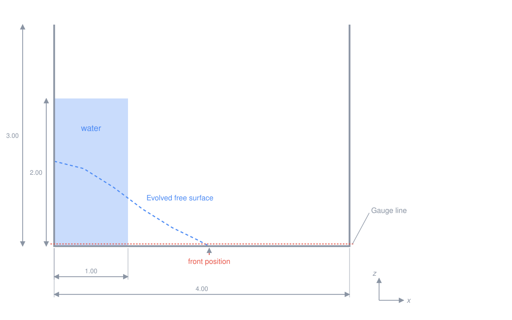
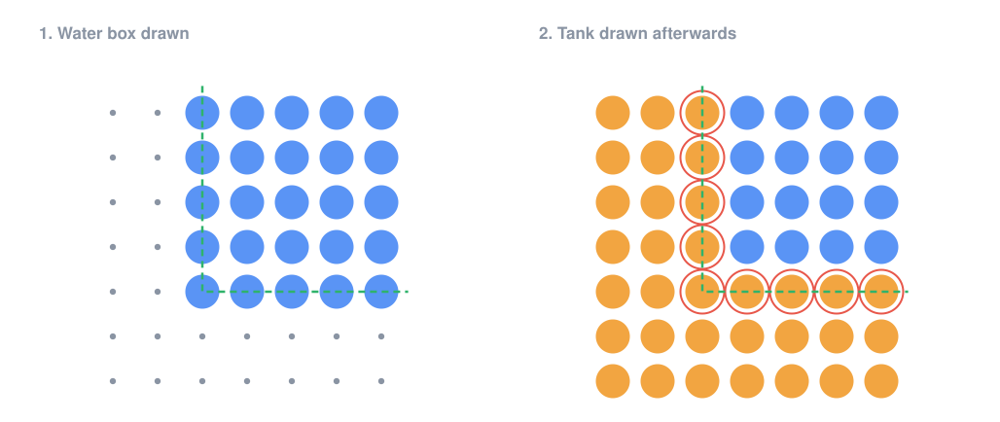
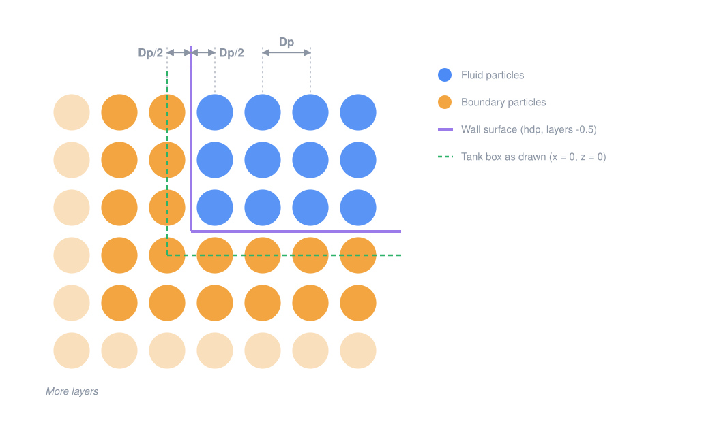
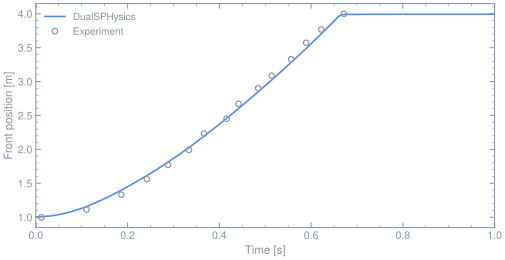

Dambreak 2D¶
Under review by Bonaventura Tagliafierro
This first benchmark is a rectangular column of water, held at rest, and released at \(t=0\); it collapses under gravity, and runs along the floor of a tank. A horizontal gauge close to the floor follows the advancing front, which is compared with the experimental front positions of Koshizuka and Oka (1996).
The case is the one you run in Run Your First Simulation. This page explains its configuration in detail.
What's Covered in This Tutorial
- Setting up a 2-D case and choosing the particle spacing
Dp - Drawing the water and the tank, and why the drawing order matters
- Particle positioning and hdp geometry used by mDBC
- A horizontal SWL gauge to measure the position of the front
- Running the case on Windows and Linux; comparing with the experimental data

Case configuration¶
Physical setup¶

| Element | Dimensions [m] | Position |
|---|---|---|
| Tank | 4.0 long, 3.0 high, open top | from \(x=0\) to \(x=4\), floor at \(z=0\) |
| Water column | 1.0 × 2.0 (length × height) | against the left wall |
| Particle spacing | \(Dp = 0.01\) |
The case is 2D, and the particles are created only in the plane \(y=0\). The water is labeled mkfluid=0 and the tank mkbound=0.
Physical constants¶
<constantsdef>
<gravity x="0" y="0" z="-9.81" comment="Gravitational acceleration" units_comment="m/s^2" />
<rhop0 value="998" comment="Reference density of the fluid" units_comment="kg/m^3" />
<rhopgradient value="2" comment="Initial density gradient 1:Rhop0, 2:Water column, 3:Max. water height (default=2)" />
<hswl value="0" auto="true" comment="Maximum still water level to calculate speedofsound using coefsound" units_comment="metres (m)" />
<gamma value="7" comment="Polytropic constant for water used in the state equation" />
<speedsystem value="0" auto="true" comment="Maximum system speed (by default the dam-break propagation is used)" />
<coefsound value="20" comment="Coefficient to multiply speedsystem" />
<speedsound value="0" auto="true" comment="Speed of sound to use in the simulation (by default speedofsound=coefsound*speedsystem)" />
<coefh value="1.3" comment="Coefficient to calculate the smoothing length (h=coefh*sqrt(3*dp^2) in 3D)" />
<cflnumber value="0.2" comment="Coefficient to multiply dt" />
</constantsdef>
Fluid: water with reference density 998 kg/m³ under gravity \((0,0,-9.81)\) m/s². rhopgradient=2 indicates that the water column is inizialized with a hydrostatic density profile.
Speed of sound: the entries with auto="true" are calculated by GenCase. The still-water level hswl is taken from the water height (2.00 m), and the system speed is the dam-break velocity taken as \(\sqrt{g\,h_{\mathrm{swl}}}\); the speed of sound is then computed considering the multiplier coefsound = 20.
Smoothing length: in 2D, \(h = \mathrm{coefh}\,\sqrt{2}\,Dp = 1.3\sqrt{2}\times0.01 = 0.0184\) m. Each particle interacts with neighbours up to \(2h\) = 3.7·Dp away. This information is used to define the number of boundary layers needed for correct simulations.
Time step: cflnumber=0.2 scales the time step that the solver computes at every step, to account for the Courant condition.
Geometry definition¶
Particle spacing and generation bounds¶
<predefinition>
<newvarcte Dp="0.01" />
<newvarcte FluidLength="1" FluidHeight="2*FluidLength" />
</predefinition>
<definition dp="#Dp" units_comment="metres (m)">
<pointref x="0" y="0" z="0" />
<pointmin x="-1" y="0" z="-1" />
<pointmax x="4.5" y="0" z="3.5" />
</definition>
Variables: Dp is the particle spacing, 0.01 m. the constant FluidHeight is taken as twice FluidLength, using the expression solver implemented in GenCase, marked by a # in front of a value, which tells GenCase to evaluate it.
The particle spacing: GenCase creates particles only at the nodes of a regular lattice (or Cartesian grid) with spacing Dp, initialized at pointref. Here pointref is the origin, so the nodes are at \(x = k\cdot0.01\) and \(z = k\cdot0.01\). All the dimensions in this case are whole multiples of 0.01 m, so every edge of the tank and of the water box falls exactly on a row of nodes.
Generation bounds: particles can only be created and retained between pointmin and pointmax. Setting \(y\) to 0 in both makes the case 2-D. You can imagine these bounds as the definition of the drawing area; the solver domain is set later by using instructions from simulationdomain (see Time-Step, Output and Domain).
Drawing the water and the tank¶
The particles are drawn in mainlist:
<!-- Particle generation -->
<setdrawmode mode="full" />
<setmkfluid mk="0" />
<drawbox>
<boxfill>solid</boxfill>
<point x="0" y="-1" z="0" />
<size x="#FluidLength" y="2" z="#FluidHeight" />
</drawbox>
<setmkbound mk="0" />
<drawbox>
<boxfill>bottom | left | right </boxfill>
<point x="0" y="-1" z="0" />
<size x="4" y="2" z="3" />
<layers vdp="0,1,2,3" />
</drawbox>
Water: setmkfluid makes the next drawn particles fluid, and the solid box generated by the drawbox fills every node from \((0, 0)\) to \((1.00, 2.00)\) m.
Tank: setmkbound makes the next particles boundary. bottom | left | right tell the command drawbox to draw the edges at the floor and the two end walls and leaves the top open. At this point, with the instruction layers vdp="0,1,2,3", the command adds four layers, one spacing apart, outwards from the box faces. Four layers reach 4.0·Dp behind the wall, which covers the 2h = 3.7·Dp reach of a fluid particle sitting Dp/2 in front of it.
Drawing in 3D for a 2-D case: both boxes are 2.0 m deep in \(y\), from −1 to 1. Only their slice at \(y=0\) gets particles; drawing the geometry in 3-D makes it easy to reuse in a 3-D case.
The drawing order: the water box starts on the nodes \(x=0\) and \(z=0\), which are also the first layer of the tank. When two drawings share a node, the last one wins. The tank is drawn after the water, so it takes those nodes, and the first fluid particle ends up one spacing from the boundary, at \(x=z=0.01\) m (Figure 2). Drawing the tank first would leave water particles on the walls.

The wall surface for mDBC (hdp)¶
The tank uses mDBC boundaries, which need the position of the wall surface; each boundary particle gets a normal that points to the nearest point of that surface. The surface (the hdp geometry) is drawn in its own list, GeometryForNormals, which mainlist runs before drawing the particles:
<list name="GeometryForNormals">
<setactive drawpoints="0" drawshapes="1" />
<setshapemode>actual | bound</setshapemode>
<!-- Tank mk=0 -->
<setmkbound mk="0" />
<setnormalinvert invert="true" />
<drawbox>
<boxfill>bottom | left | right </boxfill>
<point x="0" y="-1" z="0" />
<size x="4" y="2" z="3" />
<layers vdp="-0.5" />
</drawbox>
<setnormalinvert invert="false" />
<setfrdrawmode auto="false" />
<shapeout file="hdp" />
<resetdraw />
</list>
Generating shapes: the flags drawpoints="0" and drawshapes="1" make the list draw surfaces only for all the commands we evoke in the full list. shapeout, instead, saves them as Dambreak2D_hdp_Actual.vtk, and resetdraw clears them before the particles are drawn.
Geometry positioning: here we only have one box, and the same as the tank particle box is used here for consistency; in this cases, this passes through the first boundary layer. layers vdp="-0.5" moves each face half a spacing inwards, towards the water. The wall surface therefore lies exactly halfway between the first boundary layer (\(x=0\)) and the first fluid particle (\(x=0.01\)), at \(x=0.005\) m (Figure 3).

Geometry function: the geometry is used to generate normal vectors for the boundary particles, and then used for the internal computation by mDBC.
| Drawn (m) | Represented (m) | |
|---|---|---|
| Left wall | \(x=0\) | \(x=0.005\) |
| Floor | \(z=0\) | \(z=0.005\) |
| Right wall | \(x=4.00\) | \(x=3.995\) |
| Water column | 1.0 × 2.0 | 1.0 × 2.0, from \(x=0.005\) to 1.005 |
The fluid front position, measured from the left wall, is therefore the gauge reading minus 0.005 m. At this scale the difference is negligible, but it grows with Dp. For a case where every wall is placed exactly at its real position, see the Dambreak 3D benchmark.
Boundary normals¶
<normals>
<distanceh value="3.0" comment="Maximum distance (H*distanceh) to compute normals data (default=2)" />
<geometryfile file="[CaseName]_hdp_Actual.vtk" comment="File with boundary geometry (VTK format). Use NONE to ignore it." />
</normals>
GenCase reads Dambreak2D_hdp_Actual.vtk and computes a normal for every boundary particle up to \(3h\) (5.5·Dp) from the surface, which includes all four layers. See the mDBC guide for how the normals are defined.
Checking the generated case¶
GenCase writes the initial state to Dambreak2D_out/ before the simulation starts. Open these files in ParaView to check the case:
Dambreak2D_Fluid.vtkandDambreak2D_Bound.vtk: about 20,000 fluid particles, and the tank's four layers.Dambreak2D_hdp_Actual.vtk: the wall surface, half a spacing inside the first boundary layer (Figure 3).CfgInit_Normals.vtk: the boundary normals, which should all point towards the wet side of the tank. See Visualise mDBC normals.
Numerical gauges¶
One runtime gauge measures the position of the front. Its settings are in case/execution/special/gauges:
<gauges>
<default>
<savevtkpart value="true" comment="Creates VTK files for each PART (default=false)" />
<output value="true" comment="Creates CSV files of measurements (default=false)" />
</default>
<swl name="Swl_z003">
<pointdp coefdp="0.50" comment="Distance between check points (value=coefdp*Dp)" />
<point0 x="-0.05" y="0" z="0.03" comment="Initial point" units_comment="m" />
<point2 x="4.05" y="0" z="0.03" comment="Final point" units_comment="m" />
</swl>
</gauges>
SWL gauge: it checks sequentially all points along a line, from point0 to point2, and returns the position where the fluid ends (or begins, depending on the starting point position). This horizontal line, 3 cm above the floor, gives the \(x\) position of the front.
Settings: the check points are half a spacing apart (coefdp=0.50, 0.005 m), along the whole tank from \(x=-0.05\) to \(4.05\) m. The gauge is evaluated at every output time (TimeOut = 0.01 s).
Output: GaugesSWL_Swl_z003.csv contains time [s] and the measured position swlx [m]. savevtkpart also writes the measured point at each output time to gaugesvtks/, so it can be shown on top of the particles in ParaView.
Numerical parameters¶
All parameters are set in case/execution/parameters.
Boundary formulation and time integration¶
<parameter key="Boundary" value="mDBC" comment="Boundary method: DBC, mDBC, MIX:MixBC (default=DBC)" />
<parameter key="SlipMode" value="NS" comment="Slip mode for mDBC: NS:No-slip, FS:Free slip, V0:TanVel=0, M22:mDBC 2022 (default=NS)" />
<parameter key="NoPenetration" value="N" comment="Activate No-Penetration option for mDBC: Y/N (default=N)" />
<parameter key="StepAlgorithm" value="SYM" comment="Step Algorithm: SYM:Symplectic, VER:Verlet (default=SYM)" />
<parameter key="VerletSteps" value="40" comment="Verlet only: Number of steps to apply Euler timestepping (default=40)" />
The walls use mDBC with a no-slip condition (NS), and the time integration uses the symplectic scheme.
Kernel and viscosity¶
<parameter key="Kernel" value="WC2" comment="Interaction Kernel: WC2:WendlandC2, WC6:WendlandC6 (default=WC2)" />
<parameter key="ViscoTreatment" value="ART" comment="Viscosity formulation: LAM:Laminar, ART:Artificial (default=LAM)" />
<parameter key="Visco" value="#1e-6*8/(50*H)" comment="Viscosity value. Typically 0.01 for Artificial and 1e-6 m^2/s (water kinematic viscosity) for Laminar" />
<parameter key="ViscoBoundFactor" value="1" comment="Multiply viscosity value with boundary (default=1)" />
<parameter key="Turbulence" value="NO" comment="Turbulence model: NO:None, SPS:Sub-particle scale (default=NO)" />
Kernel: Wendland C2.
Viscosity: artificial viscosity, with the coefficient computed from the kinematic viscosity of water, 10⁻⁶ m²/s. In 2D, artificial viscosity behaves like a physical viscosity \(\nu = \alpha\,h\,c/8\); the expression solves this for \(\alpha\) with \(c\) = 50 m/s and the smoothing length H, giving \(\alpha = 8.7\times10^{-6}\). ViscoBoundFactor=1 applies the same viscosity between fluid and walls.
Density diffusion and shifting¶
<parameter key="DensityDT" value="FO" comment="Density Diffusion Term: NO:None, FO:Fourtakas (default=NO)" />
<parameter key="DensityDTvalue" value="0.1" comment="DDT value (default=0.1)" />
<parameter key="DivCleanKp" value="0" comment="Kappa parameter for Divergence Cleaning (equal to coefsound) (default=0)" />
<parameter key="Shifting" value="0" comment="Shifting mode 0:None, 1:Ignore bound, 2:Ignore fixed, 3:Full, 4:Full advanced (default=0)" />
Density diffusion: the Fourtakas formulation with coefficient 0.10 smooths the pressure field (Fourtakas et al., 2019).
Divergence cleaning and shifting: both off.
Time-Step, output and domain¶
<parameter key="CoefDtMin" value="0.05" comment="Coefficient to calculate minimum time step dtmin=coefdtmin*h/speedsound (default=0.05)" />
<parameter key="DtIni" value="0" comment="Initial time step. Use 0 to default use (default=h/speedsound)" units_comment="seconds" />
<parameter key="DtMin" value="0" comment="Minimum time step. Use 0 to default use (default=coefdtmin*h/speedsound)" units_comment="seconds" />
<parameter key="DtFixed" value="0" comment="Fixed Dt value. Use 0 to disable (default=disabled)" units_comment="seconds" />
<parameter key="TimeMax" value="1.5" comment="Time of simulation" units_comment="seconds" />
<parameter key="TimeOut" value="0.01" comment="Time out data" units_comment="seconds" />
<parameter key="RhopOutMin" value="700" comment="Minimum density valid (default=700)" units_comment="kg/m^3" />
<parameter key="RhopOutMax" value="1300" comment="Maximum density valid (default=1300)" units_comment="kg/m^3" />
<simulationdomain comment="Defines domain of simulation (default=Uses minimum and maximum position of the generated particles)">
<posmin x="default" y="default" z="default" comment="e.g.: x=0.5, y=default-1, z=default-10%" />
<posmax x="default" y="default" z="default" />
</simulationdomain>
Duration and output: the simulation runs for 1.50 s and saves the particles every 0.01 s.
Time step: is computed automatically at every step. The DtIni=0 and DtMin=0 use the default initial time step and set a minimum value.
Excluded particles: a fluid particle whose density leaves the range 700–1300 kg/m³ is removed from the simulation, with a warning. Particles that leave the domain are removed in the same way, which happens is this case after the dambreak front impacts the lateral wall.
Domain: default determines the solver domain the box around all the generated particles, in this case, up to the top of the walls at \(z=3\) m. The tank is open at the top, so any particle that goes higher than that is excluded from the simulation.
Running the simulation¶
Input files¶
Work in examples/benchmarks/00_GettingStarted/:
| File | Purpose |
|---|---|
Dambreak2D_Def.xml |
Case definition, read by GenCase |
wDambreak2D_win64_GPU.bat |
Windows: GenCase, GPU simulation, and post-processing |
xDambreak2D_linux64_GPU.sh |
Linux: the same sequence |
reference/EXP_DamTipPosition.txt |
Experimental front positions |
If Dambreak2D_out/ already exists, both scripts offer to delete it and run again, to run only the post-processing, or to stop. The first option removes the existing results.
Windows¶
From the case folder, run wDambreak2D_win64_GPU.bat. Its main lines are:
set name=Dambreak2D
set dirout=%name%_out
set diroutdata=%dirout%\data
set dirbin=../../../bin/windows
set gencase="%dirbin%/GenCase_win64.exe"
set dualsphysicsgpu="%dirbin%/DualSPHysics6.0_win64.exe"
set partvtk="%dirbin%/PartVTK_win64.exe"
set partvtkout="%dirbin%/PartVTKOut_win64.exe"
set isosurface="%dirbin%/IsoSurface_win64.exe"
rem Executes GenCase to create initial files for simulation.
%gencase% %name%_Def %dirout%/%name% -save:all
if not "%ERRORLEVEL%" == "0" goto fail
rem Executes DualSPHysics to run the SPH simulation.
%dualsphysicsgpu% -gpu %dirout%/%name% %dirout%
if not "%ERRORLEVEL%" == "0" goto fail
rem Executes PartVTK to create VTK files with fluid particles.
set dirout2=%dirout%\particles
%partvtk% -dirdata %diroutdata% -savevtk %dirout2%/PartFluid -onlytype:-all,fluid -vars:+idp,+vel,+rhop,+press,+vor,+energy
if not "%ERRORLEVEL%" == "0" goto fail
rem Executes PartVTK to create VTK files with boundary particles.
%partvtk% -dirdata %diroutdata% -savevtk %dirout2%/PartBound -onlytype:-all,bound -vars:-all
if not "%ERRORLEVEL%" == "0" goto fail
rem Executes PartVTKOut to create VTK files with excluded particles.
%partvtkout% -dirdata %diroutdata% -savevtk %dirout2%/PartFluidOut -SaveResume %dirout2%/_ResumeFluidOut
if not "%ERRORLEVEL%" == "0" goto fail
rem Executes IsoSurface to create VTK files with fluid surfaces or slices.
set dirout2=%dirout%\surface
%isosurface% -dirdata %diroutdata% -saveslice %dirout2%/Slices
if not "%ERRORLEVEL%" == "0" goto fail
Pre-processing: GenCase reads Dambreak2D_Def.xml and writes the case to Dambreak2D_out/Dambreak2D. -save:all also saves the initial particles as VTK.
Simulation: the solver runs on the GPU (-gpu) and writes its results to Dambreak2D_out. The gauge output is written during the run.
Post-processing:
- PartVTK writes the fluid particles with their velocity, density, pressure, vorticity and energy, and the boundary particles without variables.
- PartVTKOut writes the excluded particles and a summary CSV.
- IsoSurface writes slices of the free surface (
-saveslice) tosurface/.
See The batch files for a line-by-line explanation of the script structure.
Linux¶
From the case folder, run:
Running it with bash avoids needing execution permission on the script; the programs in bin/linux still need theirs (see chpermissions.sh in Run Your First Simulation). The script defines the same names and runs the same commands as the Windows BAT, with Linux paths and executable names:
export name=Dambreak2D
export dirout=${name}_out
export diroutdata=${dirout}/data
export dirbin=../../../bin/linux
export LD_LIBRARY_PATH="${LD_LIBRARY_PATH:+${LD_LIBRARY_PATH}:}${dirbin}"
export gencase="${dirbin}/GenCase_linux64"
export dualsphysicsgpu="${dirbin}/DualSPHysics6.0_linux64"
export partvtk="${dirbin}/PartVTK_linux64"
export partvtkout="${dirbin}/PartVTKOut_linux64"
export isosurface="${dirbin}/IsoSurface_linux64"
"${gencase}" "${name}_Def" "${dirout}/${name}" -save:all
if [ $? -ne 0 ]; then fail; fi
"${dualsphysicsgpu}" -gpu "${dirout}/${name}" "${dirout}"
if [ $? -ne 0 ]; then fail; fi
export dirout2=${dirout}/particles
"${partvtk}" -dirdata "${diroutdata}" -savevtk "${dirout2}/PartFluid" -onlytype:-all,fluid -vars:+idp,+vel,+rhop,+press,+vor,+energy
if [ $? -ne 0 ]; then fail; fi
"${partvtk}" -dirdata "${diroutdata}" -savevtk "${dirout2}/PartBound" -onlytype:-all,bound -vars:-all
if [ $? -ne 0 ]; then fail; fi
"${partvtkout}" -dirdata "${diroutdata}" -savevtk "${dirout2}/PartFluidOut" -SaveResume "${dirout2}/_ResumeFluidOut"
if [ $? -ne 0 ]; then fail; fi
export dirout2=${dirout}/surface
"${isosurface}" -dirdata "${diroutdata}" -saveslice "${dirout2}/Slices"
if [ $? -ne 0 ]; then fail; fi
LD_LIBRARY_PATH adds bin/linux to the library search path, which the programs need to start. After each program, the script stops if it returned an error.
Results and validation¶
Generated files¶
Dambreak2D_out/
├── Dambreak2D.xml, Dambreak2D.bi4, Dambreak2D.out
├── Dambreak2D_All.vtk, Dambreak2D_Bound.vtk, Dambreak2D_Fluid.vtk
├── Dambreak2D_hdp_Actual.vtk, Dambreak2D_MkCells.vtk
├── CfgGauge_InitPoints.vtk
├── CfgInit_Domain.vtk, CfgInit_MapCells.vtk
├── CfgInit_Normals.vtk, CfgInit_NormalsGhost.vtk
├── GaugesSWL_Swl_z003.csv
├── Run.out, Run.csv, RunPARTs.csv
├── data/
│ ├── Part_0000.bi4 … Part_0150.bi4
│ ├── Part_Head.ibi4, PartInfo.ibi4
│ └── PartOut_000.obi4
├── gaugesvtks/
│ └── GaugesSWL_Swl_z003_0000.vtk … GaugesSWL_Swl_z003_0150.vtk
├── particles/
│ ├── PartFluid_0000.vtk … PartFluid_0150.vtk
│ ├── PartBound_0000.vtk … PartBound_0150.vtk
│ ├── PartFluidOut_0000.vtk …
│ └── _ResumeFluidOut.csv
└── surface/
└── Slices_0000.vtk … Slices_0150.vtk
| Output | Written by | Contents |
|---|---|---|
Dambreak2D.xml, .bi4, .out |
GenCase | The case as read by the solver, the initial particles and the GenCase log |
Dambreak2D_All/Bound/Fluid.vtk |
GenCase | Initial particles (from -save:all) |
Dambreak2D_hdp_Actual.vtk |
GenCase | The wall surface used for the normals |
Dambreak2D_MkCells.vtk |
GenCase | The cells occupied by each mk, for checking the geometry |
CfgInit_*.vtk |
Solver | Domain, cells and boundary normals at the start of the run |
data/ |
Solver | Particle states at every output time, and the excluded particles |
Run.out, Run.csv, RunPARTs.csv |
Solver | Run log, summary and statistics per output time |
GaugesSWL_Swl_z003.csv, gaugesvtks/, CfgGauge_InitPoints.vtk |
Solver | Gauge readings, the measured point per output time, and the gauge line |
particles/ |
PartVTK, PartVTKOut | Fluid, boundary and excluded particles for ParaView |
surface/ |
IsoSurface | Slices of the free surface at every output time |
Check Run.out and particles/_ResumeFluidOut.csv after a run: they report how many particles were excluded and when.
Front position¶
GaugesSWL_Swl_z003.csv is written in Dambreak2D_out/. Its columns are time [s], the measured position swlx [m], swly [m] and swlz [m], followed by the coordinates of the gauge line. The front history is swlx against time; swlz stays at the gauge height, 0.03 m. Subtract 0.005 m from swlx to measure the front from the left wall surface (see The Wall Surface for mDBC).
Comparison with experimental data¶
reference/EXP_DamTipPosition.txt gives the experimental front positions of Koshizuka and Oka (1996): 15 pairs of values in the columns time and Xmax(tip_dam). The comparison applies until the front reaches the right wall. The scripts do not read this file; Figure 4 compares it with the gauge readings.

References¶
◆ Koshizuka, S., & Oka, Y. (1996). Moving-particle semi-implicit method for fragmentation of incompressible fluid. Nuclear Science and Engineering, 123(3), 421-434. DOI: 10.13182/NSE96-A24205.
◆ Fourtakas, G., Domínguez, J. M., Vacondio, R., & Rogers, B. D. (2019). Local Uniform Stencil (LUST) boundary condition for arbitrary 3-D boundaries in parallel smoothed particle hydrodynamics (SPH) models. Computers & Fluids, 190, 346-361. DOI: 10.1016/j.compfluid.2019.06.009.